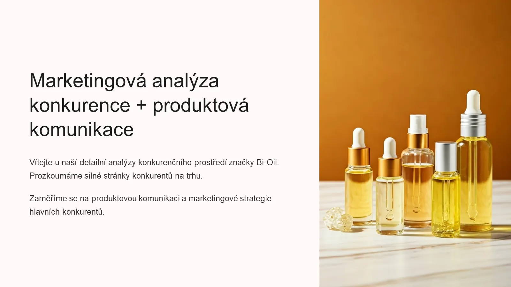

Анализ конкурентов Bi-Oil
Проект для клиента на рынке Чехии: конкурентный анализ и разбор продуктовой коммуникации. Как Bi-Oil выглядит рядом с Palmers, Mixa и Bioderma и чему можно поучиться у других брендов.

Задача
Клиенту нужно было за один день получить маркетинговый пакет по бренду Bi-Oil для чешского рынка. В этой части задача – понять, на какой позиции Bi-Oil находится среди конкурентов, какую «работу» каждый бренд выполняет для покупателя и какие приёмы коммуникации стоит перенять.
JTBD-исследование
Метод Jobs To Be Done показывает, какую «работу» покупатель нанимает продукт выполнить и что он при этом чувствует. Исследование я провела по четырём брендам.
| Бренд | Целевая аудитория | Боли | Ключевая выгода | Эмоциональные триггеры |
|---|---|---|---|---|
| Bi-Oil | Женщины 25–45 лет, беременные и после родов, люди со шрамами | Растяжки, шрамы, сухая кожа, обезвоживание | Улучшает вид шрамов и растяжек, выравнивает тон | Надежда вернуть красивую кожу, доверие к дерматологическому эффекту |
| Palmers | Женщины 20–40 лет с чувствительной кожей | Зуд, сухость, потребность в натуральном уходе | Интенсивное питание благодаря маслу какао | Аромат ностальгии, ощущение натуральности и заботы |
| Mixa | Женщины и мужчины 25–60 лет с реактивной или атопической кожей | Покраснения, раздражение, непереносимость обычной косметики | Гипоаллергенный успокаивающий состав | Облегчение, безопасность, аптечное доверие |
| Bioderma (Atoderm) | Семьи и дети с очень сухой и атопической кожей | Сильная сухость, экзема, стянутость кожи | Глубокое восстановление кожного барьера | Облегчение хронических проблем, безопасность даже для детей |
Вывод: у Bi-Oil самая сильная эмоциональная связь с красотой и уверенностью женщин в себе, а конкуренты говорят об этом менее явно. На этом и строится коммуникация.
Что сделано
- JTBD-сравнение четырёх брендов: главная «работа» и эмоциональный мотив покупки
- Пирамида конкурентных позиций: Bi-Oil, Palmers, Mixa, Bioderma
- Продуктовая карта Bi-Oil: ключевые выгоды и доказательства
- Разбор коммуникации Blistex и Batiste: послание, локализация, эмоциональный слой
- Пример листовки бренда MAM как ориентир для печатных материалов
- Рекомендации: UGC, работа с инфлюенсерами, визуализация результатов, сообщество вокруг рутины
Весь проект
Эта презентация – часть одного проекта для клиента, который я закрыла за 1 день:
- JTBD-анализ конкурентов Bi-Oil: Palmers, Mixa, Bioderma
- Сравнительная таблица болей аудитории, УТП и эмоций
- Две презентации: анализ конкурентов (эта) и маркетинговая стратегия
- Локализация маркетинговых текстов с английского на чешский с учётом эмоций, контекста и местных триггеров
- Карточки товаров для маркетплейсов, включая Blistex и Batiste
Результат
«Самым полезным оказались JTBD-анализ и детальная проработка болей целевой аудитории: это дало железобетонное понимание продукта и рынка. Проект был подготовлен мощный, и это избавило от страха оказаться некомпетентной. Работа, на которую я сама потратила бы куда больше времени, энергии и сил, была готова за достаточно короткий срок. Несомненно, буду обращаться и в дальнейшем.»